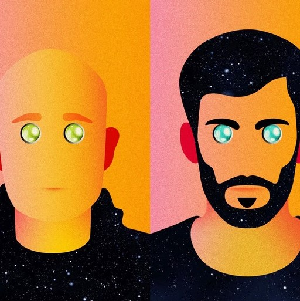

“Retina teasing, tactile and occasionally slightly wonky.”
“We work as a studio, so most of our designs are created as a team,” says Scott Bendall of La Boca.

Who is La Boca?
The studio, founded in 2002, is based in west London and has gathered an envious collection of awards, including Cannes Lions, European Design Awards, and the AOI Illustration Awards. Their exquisitely executed, psychedelic style is the combined result of each of the studio's members' unique influences, having hailed from London, Bordeaux, Devon and Switzerland. Keen to work on more animated projects in the future, the team (based in two studios, one in London and one in Amsterdam) are never short on work from a selection of devoted clients.